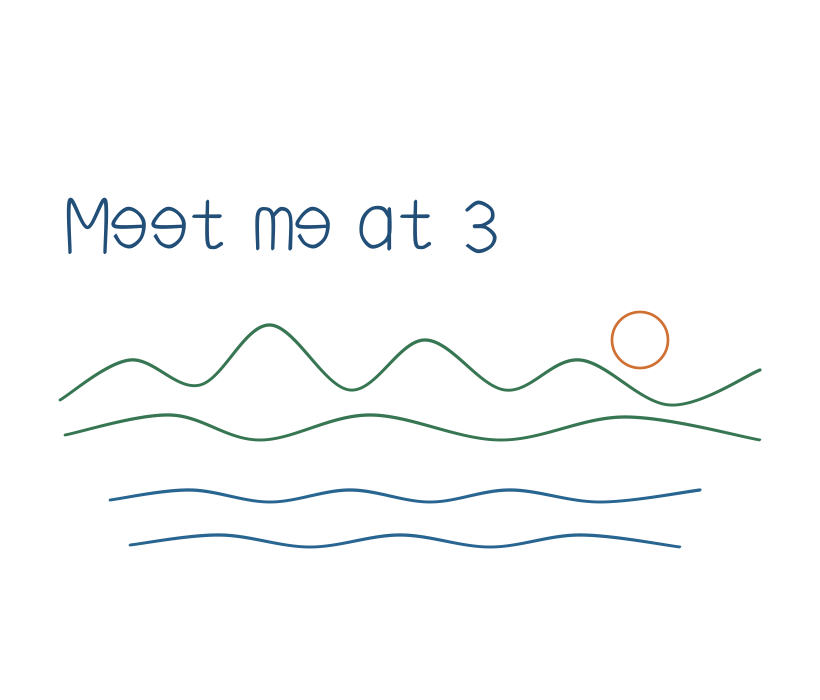

Pen strokes stay as ink on the page. Write a short note, then sketch beside it. Use Select to move or resize a stroke, Lasso Select to pick up a few at once, and Undo stroke to take back the last mark.
This note and sketch were drawn with the pen. They are editable strokes, not typed letters or a flat picture.
Back: Shapes.
